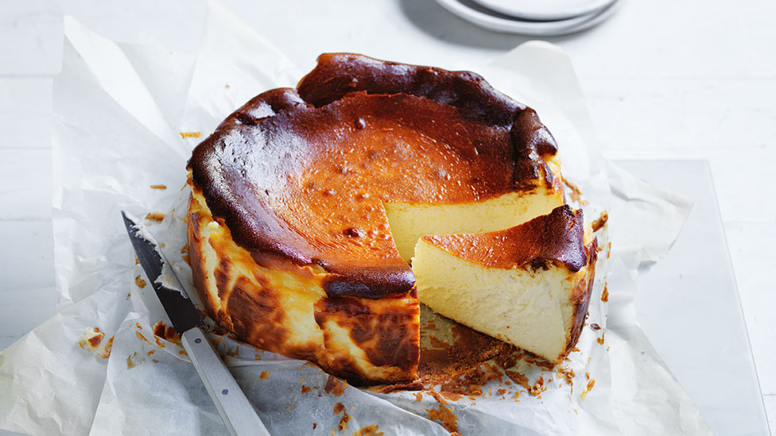

Basque Cheesecake

I rarely post a trendy recipe while it's still trendy. But this 'burnt' cheesecake method deserved the hype; baking it in a very hot
oven delivers a beautiful, dark exterior full of bittersweet notes that make the light, creamy cheesecake interior seem even more
rich and flavorful. Plus, this method is just plain easier--just remember the parchment paper. So, if you've not had much luck with
traditional cheesecake methods, you should stop trying and make this exclusively.
Ingredients
- 1 tablespoon soft unsalted butter, or as needed
- 3 (8 ounce) packages cream cheese, softened
- 1 cup white sugar
- ½ teaspoon fine salt
- 3 tablespoons all-purpose flour
- ½ teaspoon vanilla extract
- 4 extra large eggs, at room temperature
- 1 ¼ cups heavy cream
How to Make Basque Cheesecake
- Preheat the oven to 400 degrees F (200 degrees C).
- Butter a 9-inch cake pan. Cut a sheet of parchment paper large enough to line the inside of the pan by a few extra inches.
Butter the paper and press it into the pan, flattening any major creases. Trim away any excess paper from the sides until
you have an inch or two of overhang.
- Combine cream cheese, sugar, salt, and flour in a bowl. Stir and smear together with a spatula until very smooth and creamy.
Add vanilla extract and 1 egg; whisk to combine. Whisk in remaining eggs, one at a time. Pour in heavy cream and mix until smooth.
- Pour batter into the prepared pan. Tap the pan against the counter to burst any excess air bubbles.
- Bake in the preheated oven until puffed, very well browned, and nearly burned on the edges, 50 to 55 minutes. Increase oven
temperature to 425 degrees F (220 degrees C) in the last 10 minutes.
- Let cheesecake cool to room temperature, at least 25 minutes. Lift out onto a plate and peel back parchment paper, using a knife
or spatula if needed. Refrigerate until thoroughly chilled, 4 hours to overnight.
Return to main page